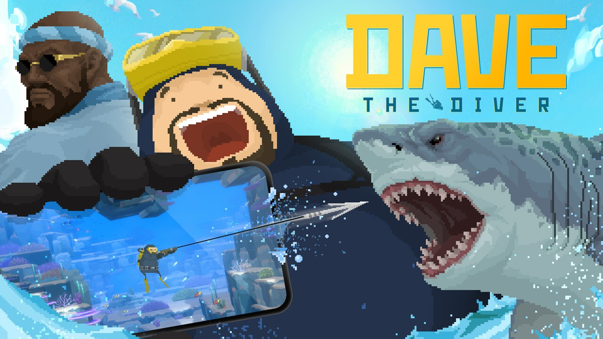
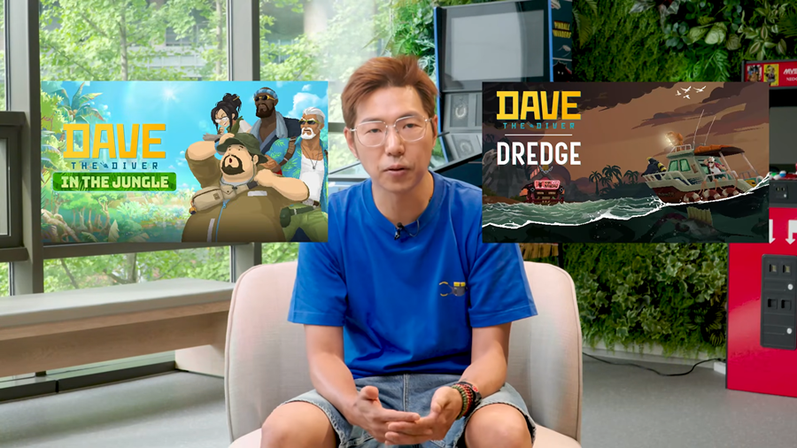
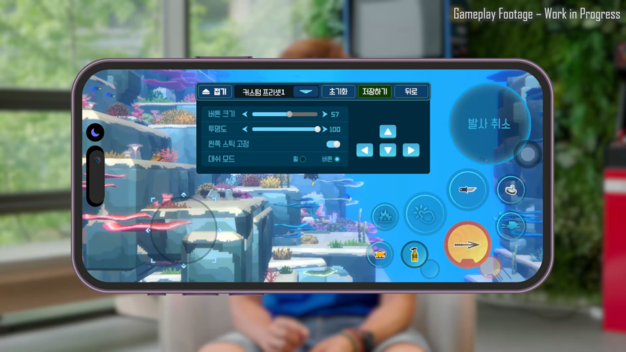

데이브더다이버모바일 9월17일 출시 확정! 9.99달러 한 번이면 광고도 P2W도 없이 다 끝나요
낮에는 바다에 나가 물고기를 잡고, 밤에는 그걸로 초밥집을 운영하는 그 독특한 조합, 데이브 더 다이버 얘기 들어보신 분들 많으실 거예요. PC로 즐기던 분들 중에서도 "이거 폰으로도 되면 참 좋을 텐데" 하고 아쉬워하신 분들 꽤 있었을 텐데, 드디어 그 바람이 이뤄지게 됐습니다.
민트로켓이 데이브 더 다이버 모바일 버전을 9월 17일에 정식으로 낸다고 밝혔거든요. 그냥 이식판 하나 더 나오는 정도가 아니라, 가격 구조부터 원작이랑 결이 좀 다르게 짜여 있어서 오늘은 제가 그 부분을 중심으로 하나씩 짚어볼게요.

폰 화면 안에서 작살을 쏘는 구도, 딱 봐도 모바일판이라는 게 느껴지죠.
이미지: 게임톡 · 네이버 본문엔 받아서 재업로드 권장
9월 17일, 이번엔 진짜 확정이에요
데이브 더 다이버 모바일 버전은 9월 17일에 앱스토어와 구글플레이, 양대 마켓에서 전 세계 동시 출시됩니다. 사실 처음엔 8월 출시 얘기가 먼저 돌았었는데요, 막상 더 다듬어서 내놓고 싶었는지 원래 계획보다 일정을 한 달 가까이 더 잡았다고 하더라고요. 그만큼 PC·콘솔에서 느꼈던 그 손맛을 폰에서도 최대한 비슷하게 살리는 데 공을 들인 셈이죠.
중국에서는 이미 지난 2월 먼저 출시돼 100만 장 넘게 팔린 이력이 있으니, 이번 글로벌 출시가 완전 맨땅에 헤딩은 아니에요. 그동안 계속 업데이트를 거치면서 완성도를 더 높여왔다고 하니, 오히려 지금이 더 다듬어진 버전을 만나는 타이밍인 셈이죠.

발표 화면에 인 더 정글이랑 드렛지 로고가 나란히 떠 있는 게 눈에 띄네요.
이미지: 인벤 · 네이버 본문엔 받아서 재업로드 권장
9.99달러 한 번이면 뭐가 다 풀리나요?
네, 9.99달러를 딱 한 번만 내면 데이브 더 다이버 모바일의 본편 전체 콘텐츠가 다 풀려요. 뭘 챙길 수 있는지 정리하면 이렇습니다.
- 9.99달러 1회 인앱결제로 본편 전체 콘텐츠 해금
- 추가 소액결제·유료 스킨·확률형 요소·광고, 전부 없음
- '드렛지' 콜라보 콘텐츠는 무료로 포함
- '인 더 정글' DLC는 4.99달러로 별도 판매
- 본편을 사면 코브라의 보트 스킨·디지털 아트북·오리지널 사운드트랙으로 구성된 '디지털 엑스트라'까지 무료 제공
원화 정가는 아래 FAQ에서 자세히 안내해 드릴게요. 대신 구조 자체는 꽤 단순해요 — 처음 한 번 지불하고 나면 게임 안에서 또 지갑을 열 일이 거의 없다는 얘기니까요.

해양생물 도감 채우는 재미, 모바일에서도 똑같이 이어져요.
이미지: 앱스토어 공식 스토어 · 네이버 본문엔 받아서 재업로드 권장
PC판이랑 뭐가 다른가요? 모바일로 사도 될까요
가장 큰 차이는 과금 구조예요 — PC·콘솔은 본편이랑 DLC를 각각 정가로 사야 하는데, 모바일은 9.99달러 한 번으로 훨씬 많은 걸 한꺼번에 풀어줍니다. 표로 나란히 놓고 보면 감이 더 빨리 오실 거예요.
| 구분 | PC·콘솔(스팀 기준) | 모바일 |
|---|---|---|
| 본편 가격 | 정가 24,000원 | 9.99달러 1회 결제 |
| 드렛지 콜라보 | 무료 콘텐츠팩(별도 설치) | 본편에 무료 포함 |
| 인 더 정글 DLC | 정가 12,000원 별도 구매 | 4.99달러 별도 구매 |
| 조작 | 마우스+키보드 / 컨트롤러 | 기울이기(틸트)+터치 특화 |
| 추가 과금 | 없음(패키지 구매형) | 없음(소액결제·광고·P2W 배제) |
결국 게임 자체는 원작을 최대한 그대로 옮기되, 지갑 여는 구조만 모바일에 맞게 더 단순화한 버전이라고 보시면 될 것 같아요. PC에서 이미 재밌게 하셨던 분들도 손맛만 확인되면 폰으로 가볍게 다시 즐기기 좋을 거고, 처음 접하는 분들 입장에선 진입장벽이 확실히 낮아진 셈이죠.

이게 스팀에서 보던 그 오리지널 얼굴이에요.
이미지: 스팀 공식 스토어 · 네이버 본문엔 받아서 재업로드 권장
조작은 실제로 어떻게 되나요?
모바일판은 기울이기(틸트)와 터치에 맞춰 조작을 새로 짰고, UI·UX 최적화랑 편의성 개선도 같이 이뤄졌습니다. 사전예약 소식 나올 때부터 폰을 기울여 방향을 잡거나 화면을 터치해서 움직이는, 모바일에만 있는 조작 방식을 새로 넣었다는 얘기가 있었는데, 실제 발표 화면을 보면 설정에서 버튼 크기·투명도까지 세세하게 조절할 수 있게 만들어놨더라고요.

오른쪽 아래 원형 버튼이 터치로 작살을 쏘는 조작이에요.
이미지: 앱스토어 공식 스토어 · 네이버 본문엔 받아서 재업로드 권장
버튼 위치나 크기가 손에 안 맞으면 직접 조절할 수 있다는 것도 마음에 드는 부분이에요. 특히 왼쪽 스틱 고정 옵션 같은 건, 오래 즐길수록 손가락이 편한 자리를 찾게 되니 은근히 챙겨야 할 설정이더라고요.

버튼 크기, 투명도, 왼쪽 스틱 고정까지 세세하게 맞출 수 있어요.
이미지: 인벤 · 네이버 본문엔 받아서 재업로드 권장
모바일에서 아쉬운 점도 솔직히 말하자면
기울이기·터치로 바뀐 조작감이 원작의 손맛을 얼마나 그대로 살렸는지는, 2026.09.05 기준 아직 아무도 확인 못 한 부분이에요. PC·마우스로 조준하던 느낌을 터치로 옮기는 게 말처럼 쉬운 일은 아니라서, 이 부분은 저도 출시일에 직접 눌러보고 다시 말씀드릴게요.
대신 과금 구조가 단순하다는 것만큼은 확실한 장점이에요. 한 번 사면 그걸로 끝, 광고도 안 뜨고 지름신 유혹도 없다는 게 요즘 모바일 게임치고는 꽤 드문 케이스거든요. 중국에서 이미 100만 장 넘게 검증된 이력까지 있으니, "이 정도면 믿고 기다려볼 만하다"는 생각이 들어요.

재료 붓는 것도 폰을 기울여서 하는 거였네요.
이미지: 인벤 · 네이버 본문엔 받아서 재업로드 권장
자주 묻는 질문
Q. 9.99달러면 원화로 정확히 얼마예요?
2026.09.05 기준 아직 정확한 원화 정가는 안 나왔어요. 국내 스토어에 정가 표시가 뜨지 않은 상태고, 일부 매체가 환율로 어림잡아 "약 1만 4천 원"이라고 쓰기도 했지만 그건 매체 추산치일 뿐 스토어 정가는 아니에요. 정확한 가격은 9월 17일 출시일에 스토어에서 직접 확인하시는 게 제일 정확합니다.
Q. 원스토어 같은 국내 스토어에서도 서비스되나요?
지금까지 확인된 소식은 앱스토어랑 구글플레이, 이 양대 마켓 얘기뿐이에요. 원스토어처럼 국내 별도 스토어에서도 나올지는 아직 확인된 바가 없어서, 이 부분은 추가 소식이 나오면 다시 알려드릴게요.
데이브 더 다이버 모바일 정리
정리하면, 9월 17일 앱스토어·구글플레이 동시 출시, 9.99달러 한 번으로 본편+드렛지 콜라보 전부 해금, 추가 결제·유료 스킨·광고·P2W 없이 깔끔한 구조예요. '인 더 정글' DLC만 4.99달러로 따로 사면 되고요. 이미 중국에서 100만 장 넘게 검증된 게임이니, PC로 즐겼던 분들도 처음 접하는 분들도 한 번쯤 기다려볼 만해요. 출시일 되면 스토어에 검색해서 바로 받아보시는 걸 추천드려요.
✔ 데이브 더 다이버 같이 보기 좋은 내용
· 데이브 더 다이버 모바일 사전예약
· 같은 게임의 '인 더 정글 DLC 출시 총정리' 글에서 PC판 DLC 내용을 더 자세히 다뤘어요.
참고한 곳
· 데이브 더 다이버 공식 앱스토어
· 데이브 더 다이버 공식 스팀 스토어